China Employee Termination 2026: Pulse Scenario Switchboard Brief for Foreign Employers
Key takeaways
- China termination risk is best managed through a scenario switchboard: each case type has a different legal and payroll control path.
- The first decision is not “how much to pay,” but “which lawful route is supportable with current evidence.”
- Foreign employers reduce disputes when HR, legal, payroll, and managers operate from one synchronized case board.
- City-level practice still affects defensibility, so each case needs local validation before communication.
- A Pulse-style briefing can stay concise while preserving legal depth in a secondary appendix.
What changed and why this matters now
In 2026, many global teams are handling multiple termination cases at once—performance exits, restructuring actions, and negotiated separations running in parallel. The operational challenge is less about writing one good policy and more about routing each case correctly under time pressure. In China, misrouting is expensive: a case that looks simple can become high-friction if route logic, evidence history, or payroll settlement controls are incomplete.
This run uses a scenario switchboard format (different from watchlist, myth-vs-fact, and cost-risk matrix) to improve usability for foreign decision makers. Instead of one generic checklist, the brief maps case types to route priorities, control points, and likely failure signals.
Plain-language legal context first
China’s labor framework does not operate on at-will principles. Employer-initiated termination generally requires a lawful statutory basis plus coherent process evidence. Public references include the PRC Labor Contract Law framework, implementing regulation references (including Decree No. 535 context), and Supreme People’s Court labor-dispute interpretation materials. For non-local teams, the practical implication is direct: legal basis, process sequence, and record quality must match. If they do not, the dispute risk can increase even when business reasons are commercially reasonable.
Think of termination as a control workflow: route selection -> fact/evidence alignment -> communication discipline -> settlement and payroll/tax execution -> archive readiness. The switchboard model helps teams choose the right lane before irreversible steps are taken.
Pulse switchboard: pick the right lane fast
Lane 1: Performance-related termination attempt
Use when: management cites sustained underperformance with supporting records.
Primary control question: Are objective standards and chronology strong enough for external review?
Go signals: documented expectations, dated feedback trail, consistency between manager narrative and records.
No-go signals: subjective comments without measurable criteria, missing acknowledgment chain, conflicting internal statements.
Practical implication: If no-go signals dominate, pause and either remediate records or consider alternative strategy.
Lane 2: Restructuring/role elimination pathway
Use when: organization change drives role-level decisions.
Primary control question: Is the business rationale translated into case-level lawful execution with consistent employee treatment?
Go signals: documented business context, clear selection rationale, coordinated communication and payout planning.
No-go signals: inconsistent treatment among similar roles, weak records explaining selection logic, rushed timeline disconnected from payroll readiness.
Practical implication: Governance discipline is more important than speed optics.
Lane 3: Negotiated separation pathway
Use when: both sides are likely to accept a controlled settlement route.
Primary control question: Are settlement terms, payment timing, and documentation integrated as one package?
Go signals: clear written terms, synchronized payroll/tax treatment, signed acknowledgment and payment proof process.
No-go signals: verbal alignment without robust paperwork, deferred reconciliation, ambiguity on final pay elements.
Practical implication: “Friendly” exits still need hard documentation controls.
Lane 4: High-friction/dispute-likely pathway
Use when: conflict signals emerge early (fact disagreement, strong objections, inconsistent records).
Primary control question: Is the company preserving defensibility while avoiding escalation mistakes?
Go signals: disciplined communication scripts, issue-tracking log, legal response timing protocol, evidence preservation.
No-go signals: ad hoc manager statements, undocumented corrections, fragmented case ownership.
Practical implication: Treat as incident management, not routine HR administration.
Why this helps foreign employers
Foreign clients often operate with distributed teams and compressed decision windows. A scenario switchboard provides immediate clarity: what lane the case is in, what must be true before moving forward, and what failure signals require pause. It translates legal complexity into executable controls without oversimplifying the underlying compliance risks.
Practical scenarios
Scenario A: Two exits, one process template, different risk outcomes
A China entity runs a performance exit and a restructuring exit using the same manager script and document sequence. The performance case lacks measurable records; the restructuring case has selection-rationale gaps. Both are exposed, but for different reasons.
Better move: split cases into distinct lanes with lane-specific gate criteria instead of one blended playbook.
Scenario B: Settlement negotiated quickly, payroll closes slowly
HR finalizes terms in principle, but payroll reconciliation and IIT mapping are delayed. Employee receives mixed messages about timing and amounts.
Better move: require settlement and payroll/tax packages to be approved together before final communication.
Scenario C: Manager urgency overrides lane controls
A business leader insists on immediate action due to team pressure. HR proceeds without city-level validation memo.
Better move: escalation protocol with written risk ownership; lane cannot advance until local validation is complete.
Role-owned SOP (switchboard execution)
Step 1 — Case intake and lane assignment
Owners: HRBP + Legal + local reviewer
- Capture case facts and classify into one primary lane.
- Record alternative lane if primary assumptions fail.
- Assign risk owner and decision deadline.
Hard gate: no employee-facing action until lane assignment and route rationale memo are approved.
Step 2 — Evidence and narrative synchronization
Owners: HR Operations + Manager + Compliance reviewer
- Build chronology ledger with source-tagged entries.
- Check narrative consistency across manager notes, HR records, and route memo.
- Approve script blocks aligned to lane-specific constraints.
Hard gate: contradictions or missing chronology links trigger hold status.
Step 3 — Payroll/tax/social insurance readiness
Owners: Payroll + Tax + HR Ops
- Finalize pay elements, severance assumptions, leave treatment, and cutoff logic.
- Validate IIT/payroll presentation and payment timing.
- Prepare payment proof and employee-facing explanation consistency.
Hard gate: communication lock remains until dual sign-off (HR compliance + payroll lead).
Step 4 — Controlled communication execution
Owners: HR lead + Manager + witness/support
- Deliver communication using approved script only.
- Capture meeting metadata and key statements.
- Launch payment and documentation workflow immediately.
Hard gate: material script drift must be documented and escalated same day.
Step 5 — Post-event closure and readiness
Owners: Compliance + Records admin + Payroll archive owner
- Index all documents by case ID and lane.
- Publish closure memo: route, facts, communication, settlement execution.
- Store evidence map for potential dispute retrieval.
Hard gate: no case closure until archive QA checklist passes.
Required document checklist
- Employee contract/tenure/entity profile
- Lane assignment note and route rationale memo
- City-level validation memo
- Chronology ledger with ownership fields
- Performance/discipline records where relevant
- Communication script and approval history
- Settlement drafts/finals and acknowledgment records
- Final payroll/severance worksheet
- IIT/social insurance handling note
- Payment execution proof
- Closure memo and indexed archive map
Exception handling (lane-aware)
Exception 1: Lane assignment uncertainty
- Trigger: mixed facts suggest multiple routes.
- Response: run a 24-hour legal triage and freeze manager outreach.
Exception 2: Missing city guidance
- Trigger: local rule interpretation not confirmed.
- Response: mark case “local-risk-open,” obtain practitioner input before advancement.
Exception 3: Contradictory manager statements
- Trigger: verbal narrative differs from record trail.
- Response: incident note + script reset + legal review before next step.
Exception 4: Payroll/tax correction after communication
- Trigger: calculation or treatment mismatch discovered late.
- Response: immediate correction workflow, transparent documentation, preserved audit log.
Exception 5: Employee rejects meeting framing
- Trigger: fact or process objections during meeting.
- Response: move to written clarification process, avoid unscripted legal assertions, maintain evidence integrity.
System implementation notes
- Add case fields in HRIS/workflow: lane type, route confidence score, evidence completeness score, payroll readiness status.
- Automate “communication lock” until required approvals are complete.
- Preserve immutable version history for scripts, memos, and sign-offs.
- Build dashboard by lane: open cases, hold reasons, correction counts, dispute outcomes.
- Feed outcomes back into lane rules for continuous improvement.
Common mistakes and prevention
- Mistake: one-size-fits-all template for different case types.
Prevention: mandatory lane assignment and lane-specific controls.
- Mistake: speed-first execution before evidence quality review.
Prevention: chronology QA gate before communication.
- Mistake: delayed payroll/tax alignment.
Prevention: dual sign-off lock condition.
- Mistake: weak local adaptation.
Prevention: city validation memo required per case.
- Mistake: closure without retrievable archive structure.
Prevention: indexed evidence map and closure QA.
What to do now (action checklist)
- Implement a scenario switchboard in your weekly China HR/payroll review.
- Train teams on lane definitions and no-go triggers.
- Standardize chronology and script-control templates.
- Add pre-communication payroll/tax readiness gates.
- Require local validation memos for all active cases.
- Track exceptions by lane and publish monthly failure patterns.
- Recalibrate lane criteria quarterly with legal/payroll stakeholders.
What to watch next
- Local labor practice emphasis may continue to vary by city and dispute type.
- Higher case volume can increase manager script drift risk without training refresh.
- Practitioner updates may clarify evolving interpretations faster than internal policy cycles.
FAQ
1) Why use a scenario switchboard instead of a single process?
Because different termination fact patterns fail for different reasons; lane-specific controls improve decision quality.
2) Can we decide route after employee communication begins?
That is high risk. Route and evidence alignment should be finalized first.
3) Is negotiated separation always the safest path?
Not automatically. Safety depends on documentation quality and settlement/payroll execution integrity.
4) How important is city-level validation?
Very important. National principles are consistent, but local practice can affect practical defensibility.
5) What should payroll own in this workflow?
Readiness gate sign-off, final pay/tax consistency, payment proof protocol, and closure archive linkage.
6) What is the most common preventable trigger of disputes?
Communication before route, evidence, and payroll controls are synchronized.
7) How do we improve over time?
Track outcomes by lane, analyze repeat failures, and update controls with cross-functional governance.
Legal depth appendix (secondary)
This briefing is based on a multi-source set combining official/legal references and practitioner analysis. Core legal anchors are the PRC Labor Contract Law framework, implementing regulation references associated with Decree No. 535, and Supreme People’s Court labor-dispute interpretation materials. Practitioner and market/payroll sources provide operational interpretation for foreign employers and illuminate how legal decisions connect to payout and tax execution realities. The main uncertainty remains city-specific and fact-specific application, which should be addressed through local counsel/practitioner validation in live matters.
Disclaimer
This content is informational only and does not constitute legal, tax, or employment advice.
Sources
- National People’s Congress (Labor Contract Law, English text), accessed 2026-03-05: http://www.npc.gov.cn/zgrdw/englishnpc/Law/2007-12/13/content_1384064.htm
- State Council Gazette reference (implementing regulation / Decree No. 535 context), accessed 2026-03-05: https://www.gov.cn/gongbao/content/2008/content_1124615.htm
- Supreme People’s Court labor dispute interpretation update page, accessed 2026-03-05: https://www.court.gov.cn/fabu/xiangqing/243981.html
- China Briefing, Employee Termination in China (practical guide), accessed 2026-03-05: https://www.china-briefing.com/news/employee-termination-in-china/
- ICLG Employment & Labour Laws and Regulations: China, accessed 2026-03-05: https://iclg.com/practice-areas/employment-and-labour-laws-and-regulations/china
- Littler ASAP analysis on China employment law developments, accessed 2026-03-05: https://www.littler.com/news-analysis/asap/key-recent-developments-chinas-employment-law-china-us-comparative-perspective
- PwC PRC Individual Income Tax summary, accessed 2026-03-05: https://taxsummaries.pwc.com/peoples-republic-of-china/individual/taxes-on-personal-income
Need local employment support in China?
If you need a compliance-first partner for hiring, payroll, and risk controls in China, China-Payroll.com can help evaluate the right setup.
Image Prompt Pack
Create a 16:9 hero image for article title: 'China Employee Termination 2026: Pulse Scenario Switchboard Brief for Foreign Employers'. Scene: global operations team evaluating workforce model options for China market entry. Include motifs: decision matrix, org…